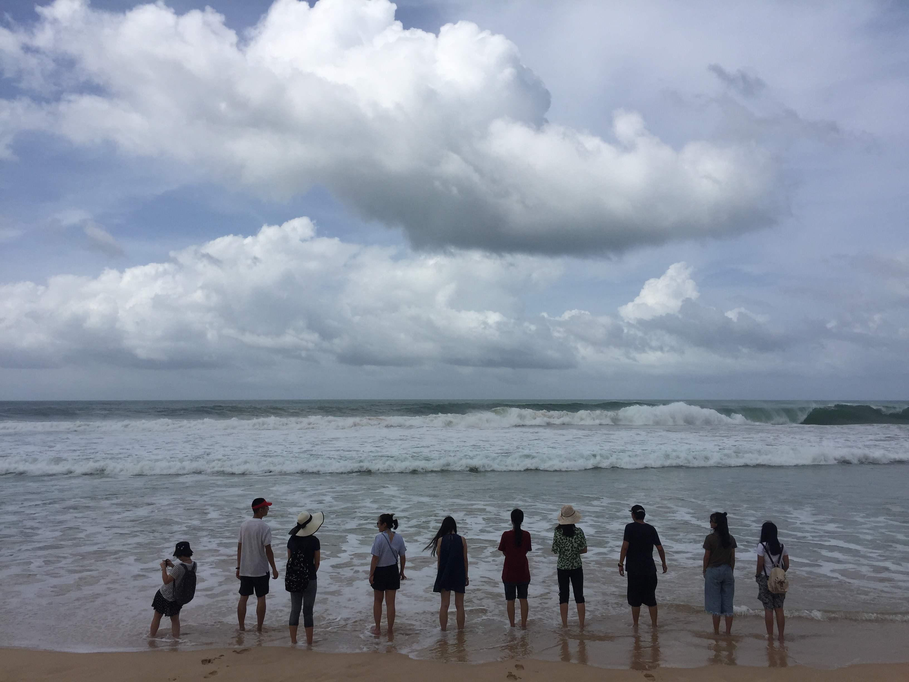
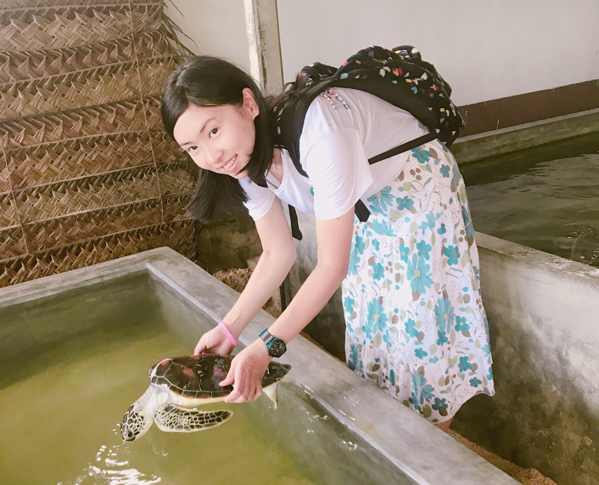
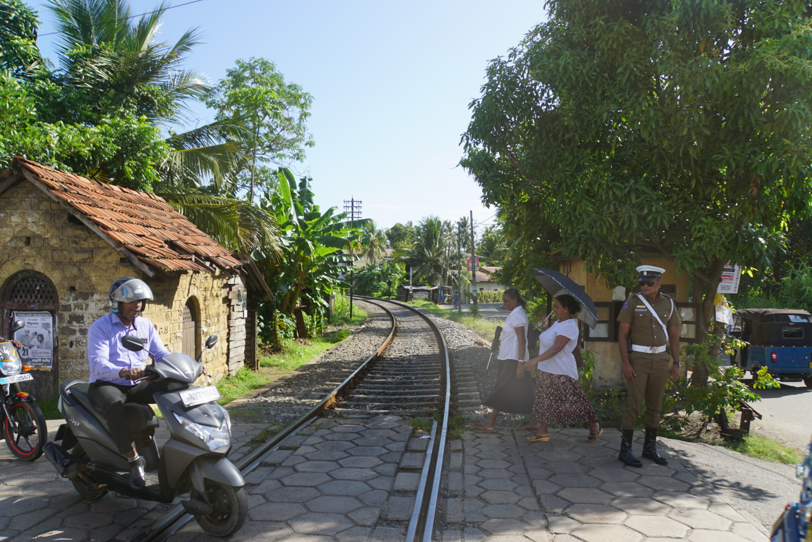
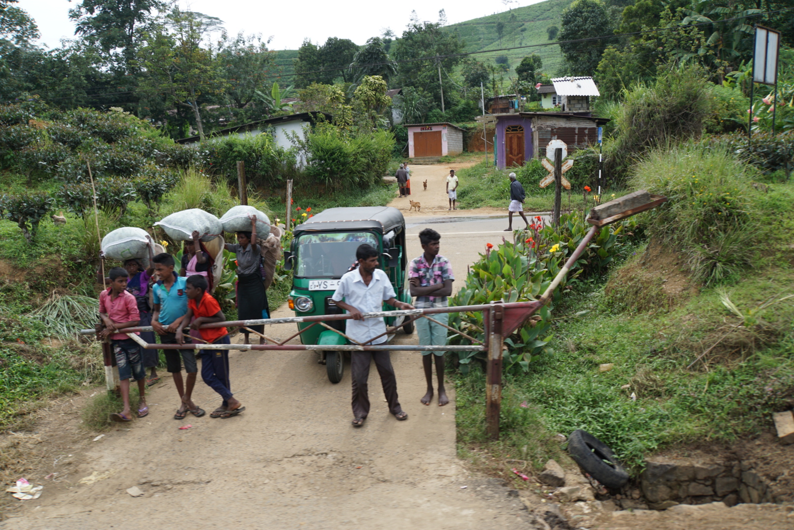
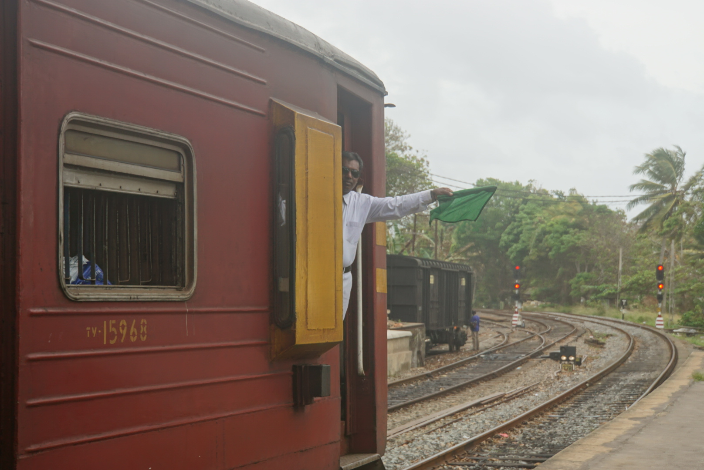
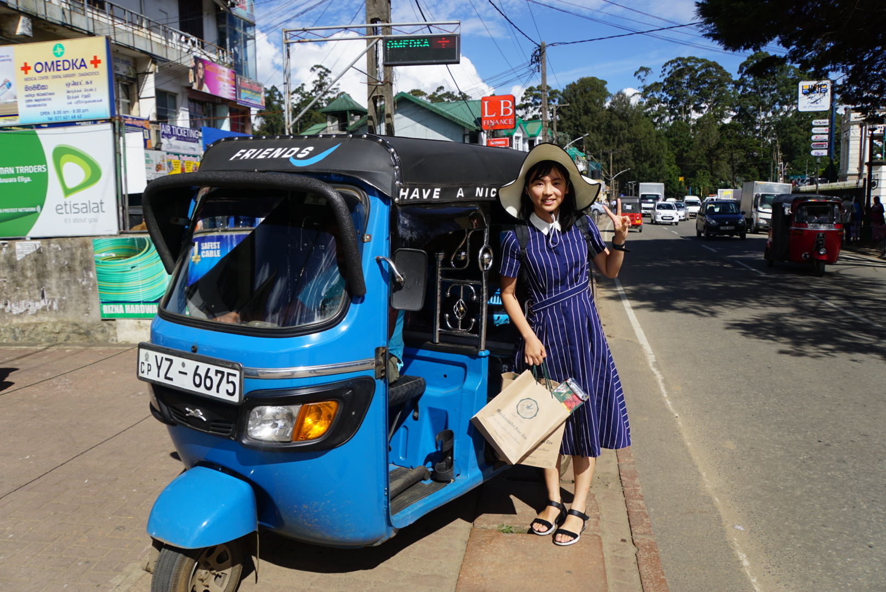
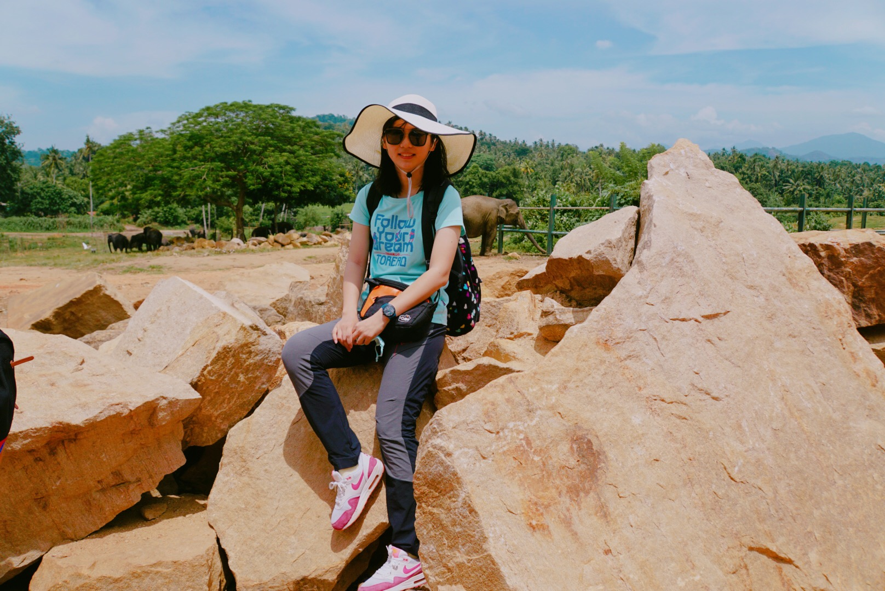
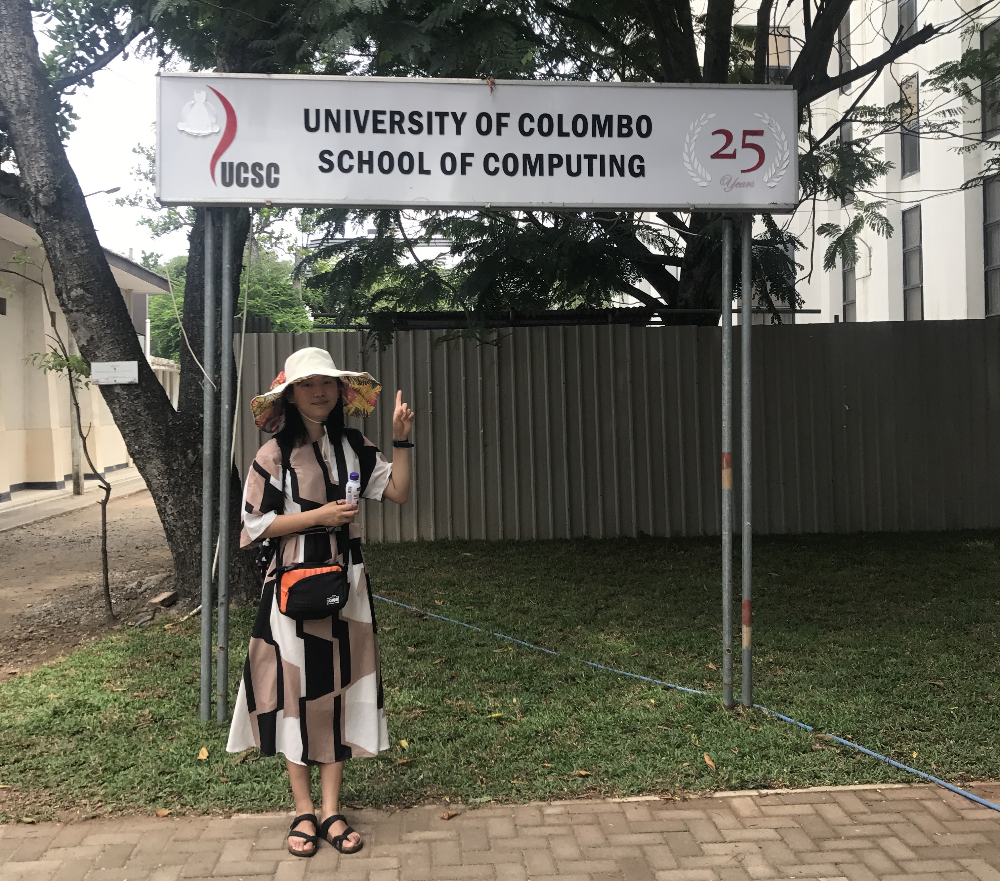

<div id="ajax-page" class="ajax-page-content">
    <div class="ajax-page-wrapper">
        <div class="ajax-page-nav">
            <!--<div class="nav-item ajax-page-prev-next">-->
                <!--<a class="ajax-page-load" href="color.html"><i class="zmdi zmdi-chevron-left"></i></a>-->
                <!--<a class="ajax-page-load" href="color.html"><i class="zmdi zmdi-chevron-right"></i></a>-->
            <!--</div>-->
            <div class="nav-item ajax-page-close-button">
                <a id="ajax-page-close-button" href="#"><i class="zmdi zmdi-close"></i></a>
            </div>
        </div>

        <div class="ajax-page-title">
            <h1>Sri Lanka: Sea Turtle Protection</h1>
        </div>

        <div class="row">
            <div class="col-sm-7 col-md-7 portfolio-block">
                <div class="owl-carousel portfolio-page-carousel">

                    <div class="portfolio-page-video embed-responsive embed-responsive-16by9">
                        <video id="media" controls> 
                              <source src="field/turtle/1.mp4">
                        </video>
                    </div>
                    <div class="item">
                        
                    </div>
                    <div class="item">
                        
                    </div>
                    <div class="portfolio-page-video embed-responsive embed-responsive-16by9">
                        <video id="media" controls> 
                              <source src="field/turtle/4.mov">
                        </video>
                    </div>
                    <div class="item">
                        
                    </div>
                    <div class="item">
                        
                    </div>
                    <div class="item">
                        
                    </div>
                    <div class="item">
                        
                    </div>
                    <div class="item">
                        
                    </div>
                    <div class="item">
                        
                    </div>
                </div>

                <!--<div class="portfolio-page-video embed-responsive embed-responsive-16by9">-->
                  <!--<iframe class="embed-responsive-item" src="https://player.vimeo.com/video/97102654?autoplay=0"></iframe>-->
                <!--</div>-->

                <!--
                <div class="portfolio-page-image">
                    
                </div>
                -->

                <script type="text/javascript">
                    jQuery(document).ready(function($){

                        $('.portfolio-page-carousel').owlCarousel({
                            smartSpeed:1200,
                            items: 1,
                            loop: true,
                            dots: true,
                            nav: true,
                            navText: false,
                            margin: 10
                        });

                    });
                </script>
            </div>

            <div class="col-sm-5 col-md-5 portfolio-block">
                <!-- Project Description -->
                <div class="block-title">
                    <h3>Description</h3>
                </div>
                <ul class="project-general-info">
                    <li><p><i class="fa fa-user"></i>Shiyin Wang Et Al.</p></li>
                    <li><p><i class="fa fa-calendar"></i>Aug 2017</p></li>
                </ul>

                <p class="text-justify">Near the coast of Sri Lanka, many local people hunt sea turtle eggs for food. Consequently, local NGOs established a sea turtle protection center to provide a safe incubation environment for little turtles. I volunteered at a sea turtle protection center in Galle, Sri Lanka. I also traveled around the island to capture the colony history of Sri Lanka.</p>
                <!-- /Project Description -->

                <!-- Technology -->
                <div class="tags-block">
                    <ul class="tags">
                        <li><a>Volunteer</a></li>
                        <li><a>Animal Protection</a></li>
                    </ul>
                </div>
                <!-- /Technology -->

                <!-- Share Buttons -->
                <div class="btn-group share-buttons">
                    <div class="block-title">
                        <h3>Share</h3>
                    </div>
                    <a href="https://www.facebook.com/sharer/sharer.php?u=https://shiyinw.github.io/" target="_blank" class="btn"><i class="fa fa-facebook"></i> </a>
                    <a href="http://www.twitter.com/share?url=https://shiyinw.github.io/" target="_blank" class="btn"><i class="fa fa-twitter"></i> </a>
                </div>
                <!-- /Share Buttons -->
            </div>
        </div>
    </div>
</div>
